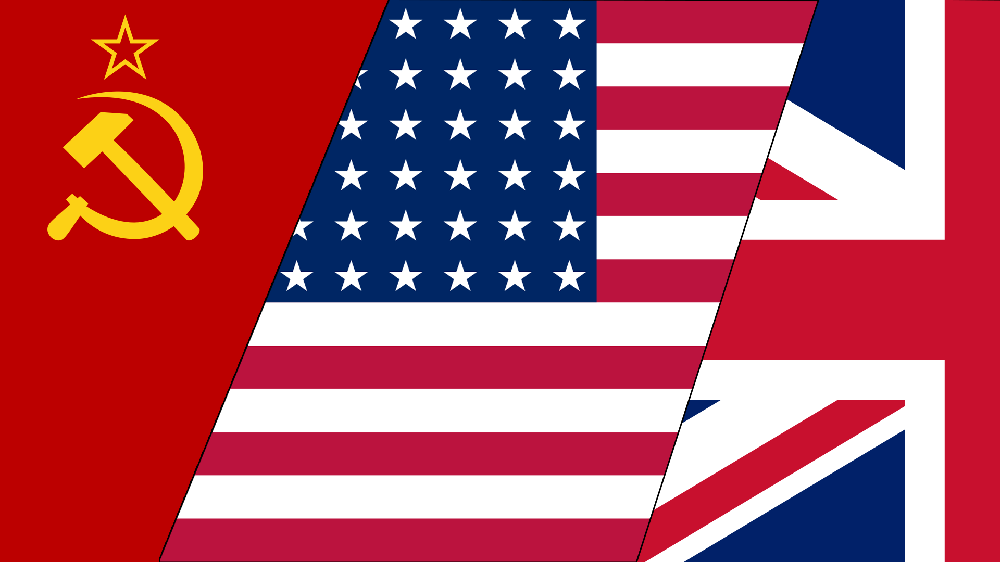
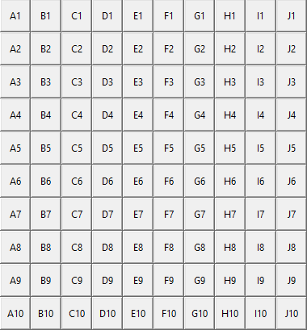
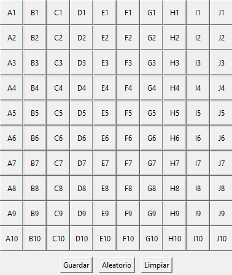
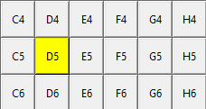
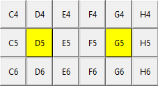
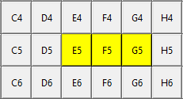
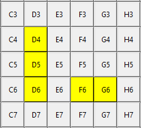
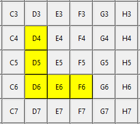
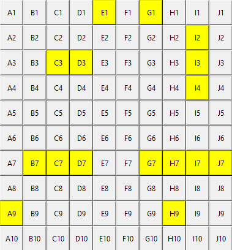

Aliados

Potencias del Eje
Aqui aprenderás a como atacar al enemigo mediante nuestro sistema sofisticado de coordenadas.
Para empezar, necesitarás saber que los barcos se encuentran despegados en el mar en un tablero de 10x10, el cual está distribuido de la siguiente manera:

Este mapa del tablero será tu mejor amiga, ya que te ayudará a visualizar donde se encuentran los barcos, ya sean tuyos o del enemigo.
Las letras representan las columnas y los números las filas.
Si quieres hacer algo en alguna casilla tendrás que escribir primero la columna y después la fila, como por ejemplo: A1 (Columna A y Fila 1)
Antes de entrar al combate necesitarás posicionar tus barcos en el campo de batalla, para eso, necesitaras abrir la opción 'Poner barcos' del menú de opciones.
Una vez ahi, te encontrarás con lo siguiente:

En este menú podrás posicionar tus barcos en el tablero, para hacerlo tendrás una casilla, esta cambiará de color a amarillo diciendo que hay un barco ahi.
Tendrás que darle tamaño a tu barco marcando otra casilla que esté al lado de otra casilla marcada.

Un barco de tamaño 1

Dos barco de tamaño 1

Un barco de tamaño 3
Puedes poner tus barcos de manera manual o automatico con el botón de 'Aleatorio', si lo haces de manera automatica, el sistema pondrá tus barcos de manera aleatoria en el tablero.
Ademas puedes poner tus barcos en cualquier dirección, ya sea horizontal o vertical, pero no en diagonal.
Ten en cuenta que los barcos no pueden estar apegados entre si, siempre tiene que haber un espacio entre ellos.

Valido

No valido
Si quieres desmarcar una casilla, simplemente vuelve a darle click y se desmarcará.
Ten en cuenta que tendras al mando los siguientes barcos, y debes ponerlos todos:

Una vez que hayas posicionado tus barcos tendrás que apretar el botón de 'Guardar', la posición de tus barcos está guardada en un formato de archivo llamado Cifrado Sin Vulneraciones (.csv).
Antes de combatir, necesitarás saber que tienes que saber estas dos cosas:
Primero escoge tu bando, soldado. Tienes las siguientes opciones:

Aliados
Potencias del Eje